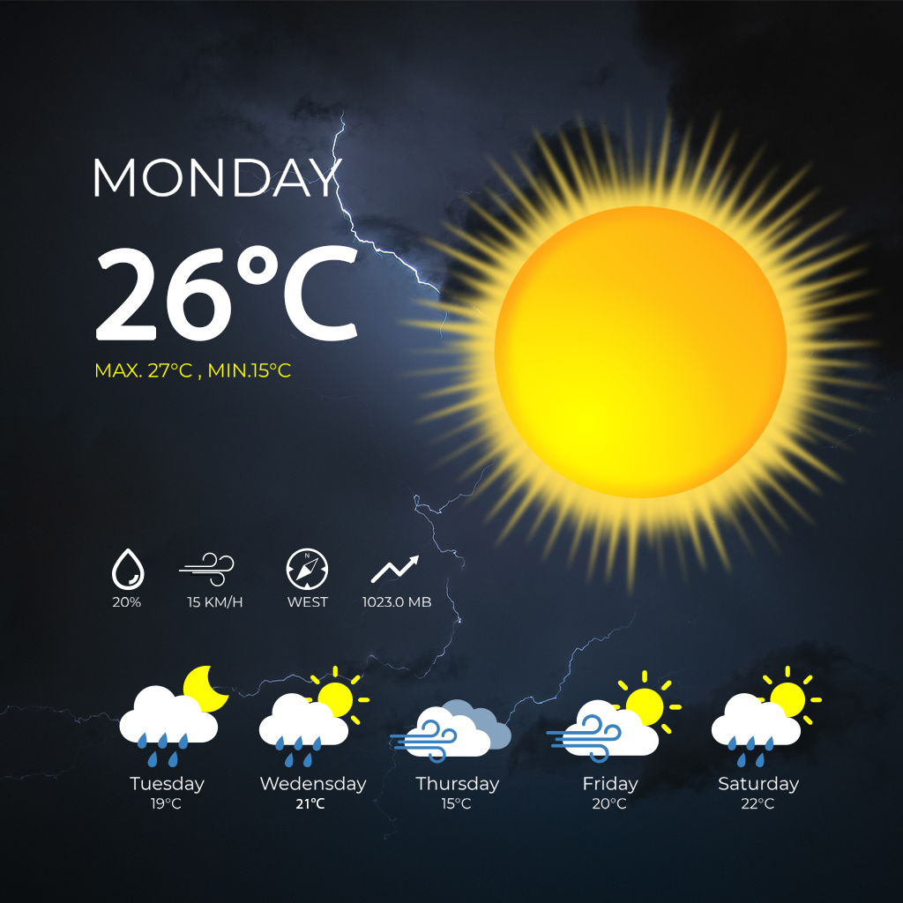
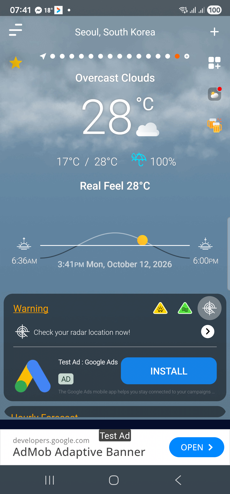

Right now. And what comes next.
See current weather, then move through hourly and daily forecasts to look at the hours and days ahead.

Weather AppWEATHER APP FOR GALAXY
From the first forecast to a change in the clouds. Keep current conditions, the hours ahead and weather radar close at hand.
Open Galaxy Store on your Samsung device.
Take a closer look
THE WHOLE PICTURE
Start with a quick glance. Stay for the details that help you make sense of the day.
See current weather, then move through hourly and daily forecasts to look at the hours and days ahead.
Open the radar view to explore weather around a location and put the forecast in a wider context.
Take a closer look at feels-like temperature, humidity, wind, precipitation, and the rhythm of sunrise and sunset.
AT HOME. OR ON YOUR WAY.
Follow the locations that matter to you. Bring a forecast to your home screen with weather widgets, and find more detail when you open the app.
See Weather App on Galaxy StoreOne app. A few useful ways to check the weather.
A FEW USEFUL DETAILS
Explore more of the app, with settings and options that work for you.
Alongside the forecast, Weather App includes air quality (AQI), UV index, atmospheric pressure and visibility. Available information depends on the location, data provider and app version; some views require Premium.
Choose your preferred weather units and a supported language in the app settings. You can also adjust weather notification settings and control notification permission in Android.
You can decline location permission and search for places manually where supported. Detecting your current location needs location access. Forecast updates for saved places use the selected places’ coordinates. You can change permissions in Android settings. Our Privacy Policy explains how location and other information are used.
The free version includes ads. Verified Premium access removes in-app advertising and unlocks the features described on the purchase screen.
Available Premium plans and prices appear in the app and Galaxy Store before purchase; offers vary by version and region. Review the payment and renewal details before confirming. See the Terms of Use for more about purchases.
WE ARE HERE TO HELP
For app support, feedback or a privacy request, send us an email.
izabelastrzelczyk726@gmail.com